The highest form of art
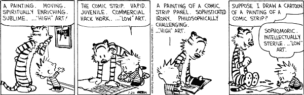
Initial goal
Wanted to make algorithmic comic strips
Take existing comic, "remix" to new comics
Calvin and Hobbes clearly the best
Spoiler: didn't quite get that far
First step
Use image recognition
Calvin and Hobbes are interesting
Need to make algorithm to extract
Scrape the data
Scrapy is awesome!
Download archives
Rename to reflect dates
Sunday comics
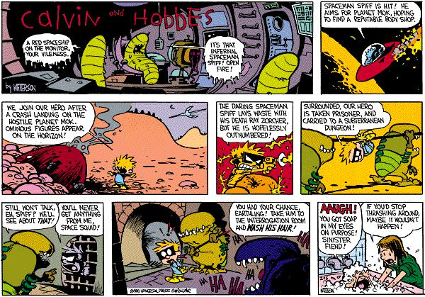
Color is good, usually
Remove strips with color
Slice strips up into pieces
The results
Lots of these:
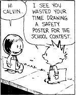
Make program to crop
Get lots of training data
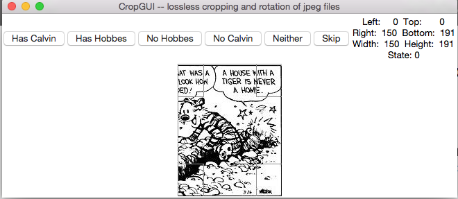
Pixels
Images are made up of pixels
100 x 100 image has 10,000
Image as a matrix
Can think of an image as a matrix
Each "cell" has the intensity at the pixel
Grayscale vs RGB
Each cell has R, G, and B intensities
Average all three to get one number (grayscale)
Look at RGB
array([[[255, 255, 255],
[249, 249, 249],
[251, 251, 251],
[240, 240, 240]],
[[251, 251, 251],
[255, 255, 255],
[239, 239, 239],
[255, 255, 255]],
[[243, 243, 243],
[244, 244, 244],
[255, 255, 255],
[250, 250, 250]],
[[255, 255, 255],
[255, 255, 255],
[248, 248, 248],
[255, 255, 255]]], dtype=uint8)
Use openCV
Haar cascade features

openCV train
https://github.com/mrnugget/opencv-haar-classifier-training
This repo is a big help when training with openCV
Results not so good
Probably due to varied image sizes
Next: Own algorithm
2d image to 1d vector
Features: Local binary patterns
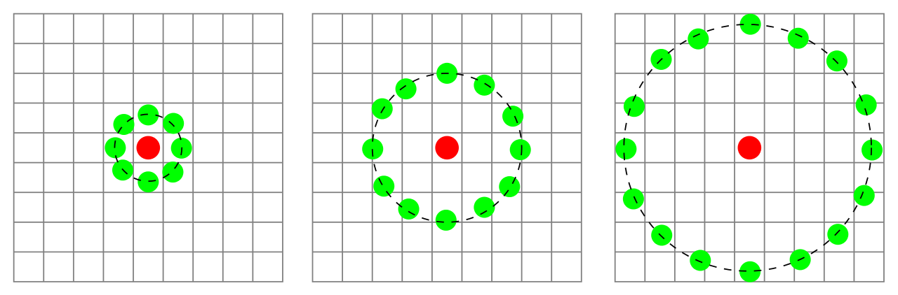
Training
Use random forest classifier (sklearn)
Separate models for calvin and hobbes
Results
Slice up images
Separate predictions for each slice
Pretty good results
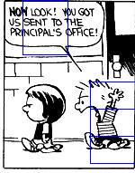 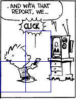
Other approaches
Also tried a KNN-based solution, but not as good
Calvin appearances
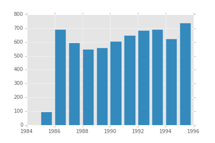
Hobbes appearances
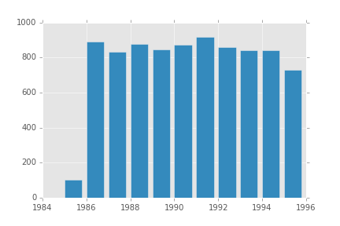
Bonus!
Decided to look into deep learning
CNNs are good for this

C+H on learning
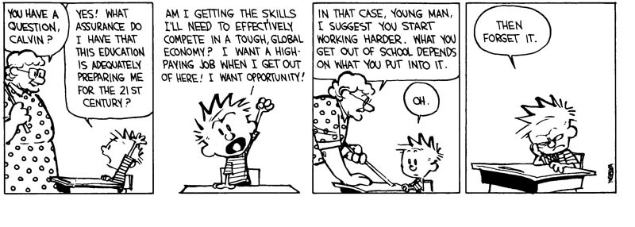
Use pylearn2
Documentation is sparse
Define models in yaml
!obj:pylearn2.train.Train {
dataset: &train !obj:conv_dataset.CHImages {
which_set: 'calvin',
start: 0,
stop: %(train_stop)i,
one_hot: True
},
model: !obj:pylearn2.models.mlp.MLP {
batch_size: %(batch_size)i,
input_space: !obj:pylearn2.space.Conv2DSpace {
shape: &window_shape [48, 48],
num_channels: 3
},
CNN
Feed in images with calvin, and images without
Learn a neural network
Add a final layer to output predicted classification
Results
Pretty good! Only 18% misclassified
Can't easily find a "box" for calvin, though
And, I did generate some art!
Use markov chains to learn pixel intensity sequences

Results
Construct image from left to right
Make chains for left, top (and spaced out variations)
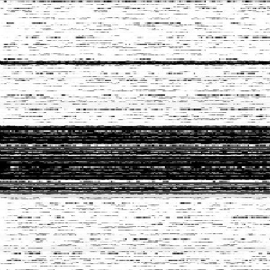
Ways to improve detection
Spend more time on tuning CNNs
Do preprocessing on images (normalize intensity, etc)
Augment training data with rotations
Ways to build out art generation
Learn SVG paths, not single pixels
Hand label generated art
Genetic algo?
Use something like nodebox to sketch
Want to learn about data science? Check out www.dataquest.io!
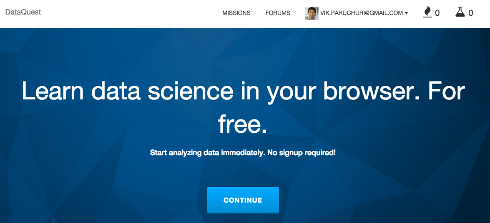